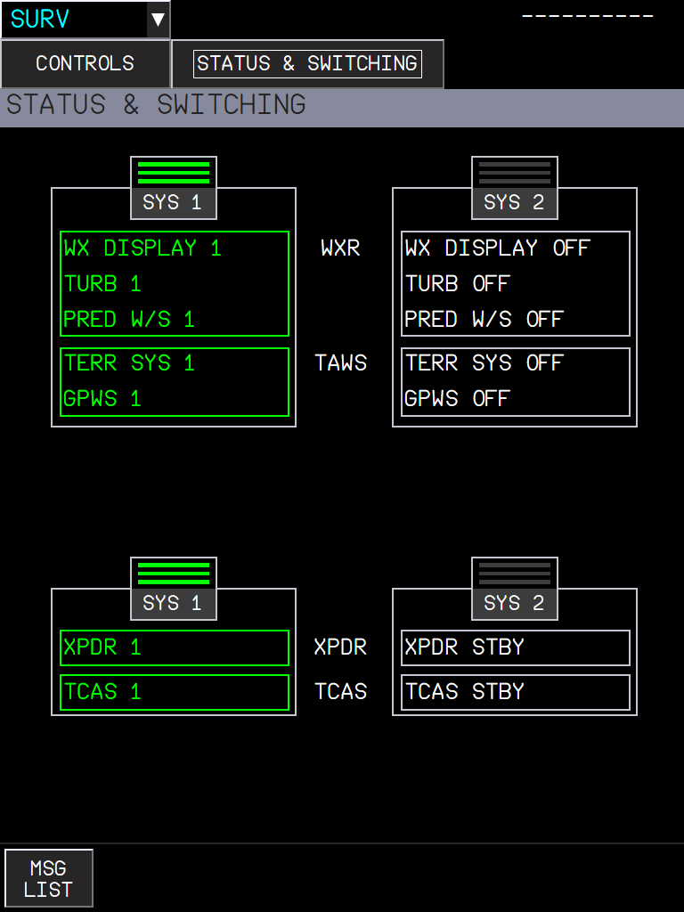
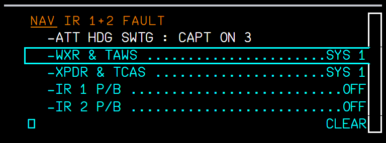
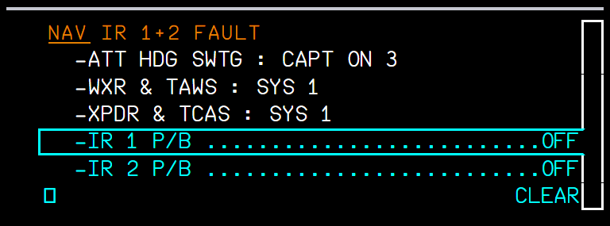
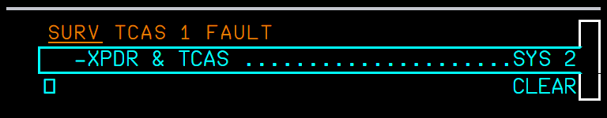
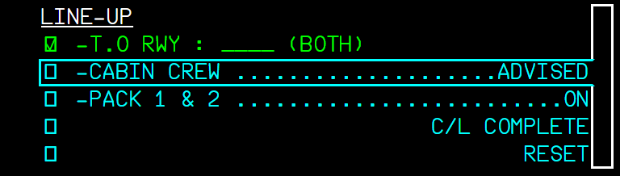
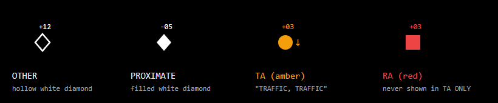
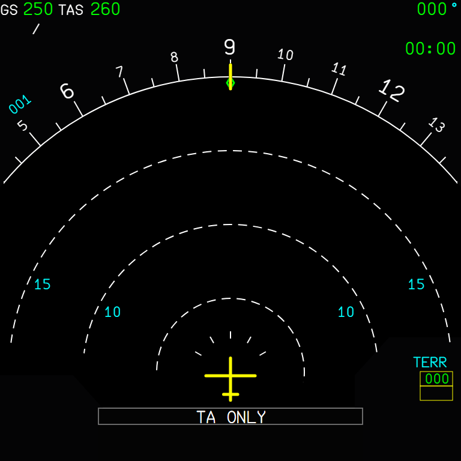
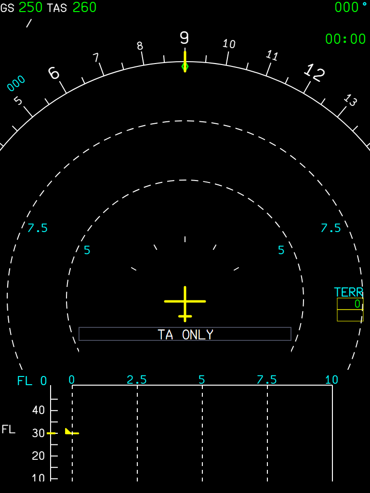

The weather radar block of the MFD SURV CONTROLS page, the STATUS & SWITCHING system selection and the pedestal SURV panel buttons were stubs. They now work and drive the same systems.
The A380 has no separate radar, TCAS or TAWS control panels: they are on the MFD SURV pages and the pedestal SURV panel (FCOM DSC-34-20-60-50). In FBW the weather radar block of the page was a stub (every button greyed), STATUS & SWITCHING did not reflect failures, and no button of the pedestal panel worked. Now they do, and the page and the panel stay in step.
| WXR button | Effect |
|---|---|
| WXR AUTO / OFF | Weather radar on or off (the ND radar picture of core/nd-weather-terrain). |
| PRED W/S AUTO / OFF | Predictive windshear (written for the systems; MSFS has no predictive windshear). |
| TURB AUTO / OFF | Turbulence detection (magenta on the ND with the native radar of core/nd-weather-terrain). |
| GAIN AUTO / MAN | Radar gain (written; MSFS has no gain). |
| MODE WX / MAP | Weather or ground mapping. |
| WX ON VD AUTO / OFF | Weather on the vertical display. |
| ELEVN / TILT | AUTO, or a manual elevation or tilt. |
The WXR buttons are inhibited only when the selected WXR system has really failed.


The panel buttons never worked: their light template runs the button code only when the panel is powered, and the pedestal never told it so. They are powered from DC 1 now and linked to the MFD pages:
| Panel button | Does | Same as |
|---|---|---|
| WXR TAWS SYS 1 / SYS 2 | Selects the WXR / TAWS system | STATUS & SWITCHING, top |
| XPDR TCAS SYS 1 / SYS 2 | Selects the transponder system | STATUS & SWITCHING, bottom |
| G/S MODE | Glide slope mode of the GPWS on / off | SURV CONTROLS, TAWS |
| TCAS ABV / BLW / TA ONLY | TCAS display and mode | SURV CONTROLS, TCAS |
Each button lights from the same value the page uses, so pressing one on the pedestal changes the page, and the reverse.
| Limitation | Why | What to do |
|---|---|---|
| PRED W/S and GAIN MAN do nothing visible. | The MSFS radar has no predictive windshear and no gain; the values are written for when it does. | - |
| One MSFS radar for both systems. | SYS 1 / SYS 2 select the failure state and the lights; the picture comes from the same sim radar. | - |
| # | Do this | Expected result |
|---|---|---|
| 1 | A380X on the ground, aircraft powered (DC 1 bus powered). MFD > SURV > STATUS & SWITCHING. | The selected WXR / TAWS and XPDR / TCAS systems are lit; each item shows the real state of its system. |
| 2 | Press XPDR TCAS SYS 2 on the pedestal SURV panel. | The pedestal button lights; on the MFD page XPDR / TCAS SYS 2 is now the selected one. |
| 3 | Select XPDR / TCAS SYS 1 on the MFD page. | The pedestal SYS 1 button lights, SYS 2 goes off. |
| 4 | Press WXR TAWS SYS 2 on the pedestal, then SYS 1. | The WXR / TAWS selection on the MFD page follows each press. |
| 5 | MFD > SURV > CONTROLS. Press the pedestal TA ONLY button. | The SURV CONTROLS TCAS block shows TA ONLY and the pedestal button is lit; the ND shows TA ONLY. |
| 6 | Press the pedestal ABV, then BLW button. | The TCAS NORM / ABV / BLW selection on the page follows; selecting NORM on the page turns the pedestal light off. |
| 7 | Press the pedestal G/S MODE button. | The TAWS G/S MODE on SURV CONTROLS changes with it (and back on the second press). |
| 8 | On SURV CONTROLS set WXR OFF, then AUTO (needs the native radar of core/nd-weather-terrain for the ND picture). | The ND radar picture goes away and comes back; the WXR buttons are greyed only if the selected WXR system has failed. |
| 9 | Cut the DC 1 bus (or start cold and dark) and press a pedestal SURV button. | Nothing happens and the buttons stay dark. |
TERR SYS OFF removed both the terrain and the weather from the VD message logic, so the VD always said "NO TERR AND WX DATA AVAILABLE". Each source now has its own message.
The VD message was always "NO TERR AND WX DATA AVAILABLE" when TERR SYS was off. Now:
| Situation | VD message |
|---|---|
| TERR SYS OFF only | NO TERR DATA AVAILABLE |
| WXR failed or OFF, or WX ON VD OFF | NO WX DATA AVAILABLE |
| Both | NO TERR AND WX DATA AVAILABLE |


| # | Do this | Expected result |
|---|---|---|
| 1 | A380X, ND in ARC or ROSE NAV so that the VD shows. MFD > SURV > CONTROLS: TERR SYS, WXR and WX ON VD all on. | No "NO ... DATA" message on the VD. |
| 2 | Set TERR SYS OFF only. | VD: NO TERR DATA AVAILABLE. |
| 3 | TERR SYS back ON, set WX ON VD OFF. | VD: NO WX DATA AVAILABLE. |
| 4 | WX ON VD back ON, set WXR OFF. | VD: NO WX DATA AVAILABLE. |
| 5 | With WXR OFF, also set TERR SYS OFF. | VD: NO TERR AND WX DATA AVAILABLE. |
The dual ADR and IR fault procedures ask the crew to move the WXR & TAWS and the XPDR & TCAS to the system that still has valid data. Those lines were hard-coded as done, so the ECAM ticked them even when the wrong system stayed selected. They now follow the selection made on the MFD SURV STATUS & SWITCHING page, and the TCAS 1 / 2 FAULT procedures show their XPDR & TCAS line, which was hidden.



| Procedure | WXR & TAWS | XPDR & TCAS |
|---|---|---|
| ADR 1+2 FAULT, ADR 2+3 FAULT, IR 1+2 FAULT, IR 2+3 FAULT | SYS 1 | SYS 1 |
| ADR 1+3 FAULT, IR 1+3 FAULT | SYS 2 | SYS 2 |
| TCAS 1 FAULT | - | SYS 2 |
| TCAS 2 FAULT | - | SYS 1 |

| Situation | What you should see |
|---|---|
| The right system is already selected when the fault appears | The line is shown already done. |
| The crew selects the other system | The line ticks within a second; the cursor moves to the next line. |
| The crew goes back to the failed side | The line becomes due again (it follows the live selection). |
| Limitation | Why | What to do |
|---|---|---|
| TCAS 1 FAULT and TCAS 2 FAULT come together. | FBW has one TCAS computer: both procedures read the same TCAS fault (an FBW note in the code). | Select the system the procedure you follow asks for. |
| # | Do this | Expected result |
|---|---|---|
| 1 | A380X on the ground, one engine running (the ADR faults are not raised in flight phases 1 and 12). MFD > SURV > STATUS & SWITCHING: select WXR / TAWS SYS 2 and XPDR / TCAS SYS 2. | Both SYS 2 selected. |
| 2 | Overhead ADIRS panel: set the ADR 1 and ADR 2 pushbuttons OFF. | E/WD: ADR 1+2 FAULT. Its WXR & TAWS ... SYS 1 and XPDR & TCAS ... SYS 1 lines are cyan (to do). |
| 3 | Select WXR / TAWS SYS 1 on the SURV page. | Within a second the WXR & TAWS line turns white (done). |
| 4 | Select XPDR / TCAS SYS 1 (page or pedestal). | The XPDR & TCAS line is done; the cursor moves on. |
| 5 | Select XPDR / TCAS SYS 2 again. | The XPDR & TCAS line is due again (it follows the live selection). Set the ADR pushbuttons back ON afterwards. |
| 6 | Raise a TCAS fault: flyPad > Failures > ATA 34 RA SYS A and RA SYS B (the TCAS uses radio altimeter 1, else 2), on the ground. | E/WD: TCAS 1 FAULT and TCAS 2 FAULT, each now with its XPDR & TCAS line (before: hidden). The radio altimeter alerts show too. |
| 7 | Select XPDR / TCAS SYS 2, then SYS 1. | With SYS 2 the TCAS 1 FAULT line is done, with SYS 1 the TCAS 2 FAULT line. Clear the failures afterwards. |
The A380 FCOM BEFORE TAKEOFF checklist has a CABIN CREW item; the ECAM LINE-UP checklist did not.

The ECAM LINE-UP checklist gets the CABIN CREW line that the flyPad checklist already had (A380 FCOM BEFORE TAKEOFF checklist: CABIN CREW ... ADVISE). It is ticked by the crew.
| Limitation | Why | What to do |
|---|---|---|
| No SURV lines in the normal checklists. | The A380 FCOM normal checklists (PRO-NOR-C-L) have none (SURV, WX & TERR and TCAS are SOP flow items); an earlier version of this change added some and was reverted. | - |
| # | Do this | Expected result |
|---|---|---|
| 1 | A380X ready for takeoff. Press C/L on the ECAM control panel and go to the LINE-UP checklist. | The checklist shows a CABIN CREW ... ADVISED line, in cyan (to do). |
| 2 | Tick the line (ECAM control panel or KCCU). | The line turns white (done); it is not ticked by itself. |
With every RA inhibited (TA ONLY selected, or low: below 900 ft radio altitude in descent, until 1100 ft in climb, see the next feature), the TCAS kept classifying an intruder that met the RA criteria as an RA. The ND drew it as a red RA square, and since it was not a TA, there was no "TRAFFIC, TRAFFIC" and no TA state. A real TCAS in TA ONLY shows it as an amber TA with the TA aural. The classification is now capped at TA while all RAs are inhibited.



| Situation | What you should see |
|---|---|
| TA ONLY selected, intruder meeting the RA criteria | Amber TA circle and "TRAFFIC, TRAFFIC" (before: red RA square, no aural). |
| Below 900 ft radio altitude in descent, until 1100 ft in climb (all RAs inhibited) | Same: TAs only, TA ONLY on the ND. |
| Partial inhibits (no CLIMB / DESCEND / INCREASE DESCENT RA) | Unchanged: RAs are still issued. |
| An RA already running when the inhibit starts | It runs to its own end. |
| Limitation | Why | What to do |
|---|---|---|
| Same change on both aircraft. | The A32NX TcasComputer and the A380X LegacyTcasComputer share the classification code. | - |
| # | Do this | Expected result |
|---|---|---|
| 1 | In flight above 1100 ft radio altitude with traffic (AI or multiplayer) converging on you. TCAS in TA/RA. | An intruder meeting the RA criteria is a red square with an RA aural. |
| 2 | Select TA ONLY (A32NX: TCAS mode selector TA; A380X: SURV CONTROLS TA ONLY). | TA ONLY on the ND. The same intruder is now an amber TA circle with "TRAFFIC, TRAFFIC" (before: a red RA square and no aural). |
| 3 | Back to TA/RA during an RA already running, then TA ONLY again. | An RA already running when the inhibition starts runs to its own end. |
The TCAS inhibits all RAs close to the ground, and lower down the TA aural too. Both used a flat threshold (1000 ft and 500 ft radio altitude). The A380 FCTM (Supplementary Information, TCAS) gives a hysteresis, the FCOM "below 1000 ft ±100 ft". Both TCAS computers now use it:
| Inhibition | Starts (descending through) | Ends (climbing through) |
|---|---|---|
| All RAs (TA ONLY on the ND) | 900 ft radio altitude | 1100 ft radio altitude |
| TA aural ("TRAFFIC, TRAFFIC") | 400 ft radio altitude | 600 ft radio altitude |
| # | Do this | Expected result |
|---|---|---|
| 1 | A32NX or A380X on approach, TCAS in TA/RA, descending through 1000 ft radio altitude. Watch the ND. | No TA ONLY message yet at 1000 ft. |
| 2 | Continue below 900 ft radio altitude. | TA ONLY appears on the ND (all RAs inhibited). |
| 3 | Go around and climb. | TA ONLY stays up to 1100 ft radio altitude and disappears above it. |
| 4 | With traffic close by on a low approach (AI or multiplayer), descend below 400 ft radio altitude. | The TA symbol stays, the "TRAFFIC, TRAFFIC" aural is not given; it is given again above 600 ft in the climb. |
The shared TCAS / WXR message component put the TCAS message ("TA ONLY", "TCAS", "TCAS STBY") at the left of its line. The A320 ND shows it at the bottom centre, below the aircraft symbol between the ADF and VOR fields (A320 FCOM DSC-34-SURV-60-20, ND indications figure), where the A380X already placed it. The A32NX ND now centres it the same way (see the A32NX picture in the TA feature above).
| # | Do this | Expected result |
|---|---|---|
| 1 | A32NX, ND in ROSE NAV or ARC. Set the TCAS mode selector on the ATC/TCAS panel to TA. | TA ONLY at the bottom centre of the ND, below the aircraft symbol, between the ADF/VOR fields (before: at the left). |
| 2 | Set the TCAS mode selector to STBY. | TCAS STBY at the same centred place. |